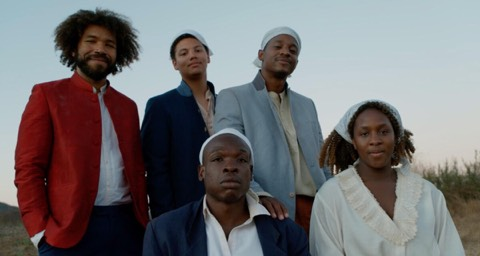

Martin Luther King Jr. Memorial Library
Films screened here
- 1946: The Mistranslation That Shifted CultureSharon “Rocky” Roggio2023 · 92 min
- 23Milan M.A. Gonzales2023 · 10 min
- A Shot at HistoryErika Cohn2024 · 24 min
- All Static & NoiseDavid Novack2023 · 102 min
- All the Empty RoomsJoshua Seftel2025 · 33 min
- American Grail: A Quest for the Ivory-Billed WoodpeckerAndy Sarjahani2024 · 16 min
- Another BodySophie Compton, Reuben Hamlyn2023 · 92 min
- Beneath the Surfacecai thomas2023 · 6 min
 Bloodlines, MississippiCrystal Kayiza2025 · 20 min
Bloodlines, MississippiCrystal Kayiza2025 · 20 min
Boil That Cabbage DownCandace Williamson2025 · 25 min- Everything Is FineVanessa Kjeldsen2024 · 28 min
 ExodusNimco Sheikhaden2025 · 35 min
ExodusNimco Sheikhaden2025 · 35 min- Expression of IllnessBryn Silverman2024 · 21 min
 Fox Chase BoyGerad Argeros, Kaya Moon Dillon2024 · 27 min
Fox Chase BoyGerad Argeros, Kaya Moon Dillon2024 · 27 min- Friendly SignsRahsaan “New York” Thomas2023 · 21 min
- How to Sue the KlanJohn Beder2024 · 35 min
- I Am Ready, WardenSmriti Mundhra2024 · 37 min
- If Dreams Were LightningRamin Bahrani2023 · 25 min
 In Exchange for FleshCorey Devon Arthur, Sandro Ramani2025 · 15 min
In Exchange for FleshCorey Devon Arthur, Sandro Ramani2025 · 15 min- IncidentBill Morrison2023 · 30 min
 Jeffery, Come HomeEsther Lim, Jankhna Sura2025 · 21 min
Jeffery, Come HomeEsther Lim, Jankhna Sura2025 · 21 min Locked OutKate Davis, Luchina Fisher2023 · 78 min
Locked OutKate Davis, Luchina Fisher2023 · 78 min- MintedNicholas Bruckman2023 · 96 min
 No se ve desde acá (You Can't See It From Here)Enrique Pedráza-Botero2025 · 20 min
No se ve desde acá (You Can't See It From Here)Enrique Pedráza-Botero2025 · 20 min- One BulletCarol Dysinger2023 · 90 min
- Phantom ParrotKate Stonehill2023 · 82 min
- Police DiveTeresa Carante2024 · 10 min
- Prelude of a StoryAshley Salman2024 · 17 min
- Projecting ProtestThomas Clement2024 · 22 min
- Safe PlaceSamuel-Ali Mirpoorian2024 · 20 min
- Sorry / Not SorryCaroline Suh, Cara Mones2023 · 90 min
 Status: VenezuelanMauricio Rodriguez-Pons2025 · 35 min
Status: VenezuelanMauricio Rodriguez-Pons2025 · 35 min- Suddenly TVRoopa Gogineni2023 · 19 min
 Teaching AmericaAnurima Bhargava2025 · 20 min
Teaching AmericaAnurima Bhargava2025 · 20 min Thank You for Allowing Me to Speak with You TodayKate Stonehill2025 · 8 min
Thank You for Allowing Me to Speak with You TodayKate Stonehill2025 · 8 min- The Lost Souls of SyriaStéphane Malterre2023 · 99 min
- The Mother TrapMark Helenowski2023 · 17 min
- The Night DoctrineMauricio Rodriguez-Pons, Almudena Toral2023 · 16 min
- The Price of Truth, Director’s CutPatrick Forbes2023 · 85 min
- The Smallest PowerAndy Sarjahani2023 · 6 min
- This Is Not Financial AdviceZach Ingrasci, Chris Temple2023 · 88 min
 We Bloom in Spring2025 · 19 min
We Bloom in Spring2025 · 19 min- Who Is Living in My Father’s House?Isaac George Crown Manesis2023 · 10 min
Sessions held here
- 2023 · Thu Nov 2 · 1:00 PMPanel · DX²Forging the Future: FRONTLINE/Firelight FellowshipCarla Borrás, Monika Navarro, Jacqueline Olive, Kevin Shaw, Marta Urquilla
- 2023 · Thu Nov 2 · 11:00 AMPanel · DX²Investigative Filmmaking Under Fire: The Holly, A Case StudyJulian Rubinstein, Robert Gutierrez, Katie Townsend
- 2023 · Thu Nov 2 · 2:15 PMPanel · DX²The Art of Visual NewsReema Akkad, Erica Berenstein, Rozina Breen, Margaret “Mishi” Ebrahim
- 2023 · Thu Nov 2 · 3:45 PMPanelUsing and Abusing Deepfakes: The Dangers and Potential of AI in DocumentaryFatima Anwar, Sophie Compton, Lisa Zycherman, Patricia Aufderheide
- 2023 · Thu Nov 2 · 9:30amPanel · DX²Working Intersectionally – News & DocumentaryEvan Mascagni, Kimberly Mitchell, Kathy Kieliszewski, Lauren Pabst
- 2023 · Thu Nov 2 · 9:30 AMConversationWorking Intersectionally: News and Documentary (Opening Conversation)Lauren Pabst, Kathy Kieliszewski, Kimberly Mitchell, Evan Mascagni
- 2023 · Fri Nov 3 · 2:30 PMPanelEyes Everywhere: The Widening Net of Government SurveillanceKathleen McClellan, David Novack, Kate Stonehill, Emma Weil, Clayton Weimers
- 2023 · Fri Nov 3 · 1:00 PMPanel · DX²Out of Sight/Top of Mind: Covering War’s Forgotten CasualtiesPaco De Onís, Carol Dysinger, Roopa Gogineni, Elahe Izadi
- 2023 · Fri Nov 3 · 12:00 PMScreening eventShortcuts Program 1
- 2023 · Fri Nov 3 · 4:00 PMPanelThe Future (Disappearance?) of Digital AbundanceNicholas Bruckman, Alex Clark, Shawn Hazelett, Chris Temple, Kathy Davidov
- 2023 · Fri Nov 3 · 10:45 AMPanel · DX²Uncovering Democracy in Peril: Voting RightsEric Feder, Andy Kroll, Brad Lichtenstein, Yoruba Richen, Kate Woodsome
- 2023 · Fri Nov 3 · 9:30 AMWorkshop · DX²Working Intersectionally – Race & EthnicityPrincess Hairston, Julian Rubinstein, jeanelle augustin
- 2023 · Sat Nov 4 · 9:30 AMWorkshopCrossing BordersJune Cross, Patricia Finneran, Leyi Huang, Chris Lett, Amanda Pike
- 2023 · Sat Nov 4 · 11:00 AMWorkshopDecoding Police Recordstrina reynolds-tyler, cai thomas
- 2023 · Sat Nov 4 · 2:00 PMMasterclass · DX²Master Class: Based on a True StoryMiranda Rose Hall, Michael Rezendes
- 2023 · Sat Nov 4 · 11:00 AMWorkshopProducing Towards Equity with IDA & Documentary Producers AllianceCarletta S. Hurt, Lance Kramer
- 2023 · Sat Nov 4 · 2:15 PMWorkshopRevealing Records for FilmmakersNate Jones
- 2023 · Sat Nov 4 · 12:45 PMWorkshopVisual Forensics for Investigative FilmmakersSarah Cahlan, Meg Kelly
- 2024 · Fri Nov 8 · 12:00 PMScreening eventShorts: Illuminating PerspectivesLynne Adrine
- 2024 · Sat Nov 9 · 12:00 PMScreening eventShorts: Reframing the South (DX Reel South Award Finalists)Brent Lambert-Zaffino, Nick Price
- 2024 · Sun Nov 10 · 1:30 PMScreening eventShorts: Breaking the Mold: Defying Conventional Narrative ShortsNicki Mayo
- 2025 · Fri Oct 31 · 11:00 AMScreening eventShort Strand 1: Illuminating MemoryBenjamin Duchek, Conall Jones, Sandro Ramani, Corey Devon Arthur, Anurima Bhargava, Kate Stonehill
- 2025 · Fri Oct 31 · 1:15 PMScreening eventShort Strand 2: DX Reel South Award ShortsBenjamin Duchek, Enrique Pedráza-Botero, Crystal Kayiza, Nick Price
- 2025 · Fri Oct 31 · 3:00 PMScreening eventShort Strand 3: Of Resistance and RebirthWonjung Bae
- 2026 · Sat Nov 7 · 11:30amWorkshopRestoring Reality: A Wayback Machine Deep DiveMark Graham
- 2026 · Sat Nov 7 · 10:00amWorkshopThe People’s Archive: What’s In It, How to Use ItBonnie Rowan, Marisa Fox, Doug Block, Lisa Warwick